Подборку собрали 15 ноября, прошедшие события скрыты. Свежая афиша — на главной
Подборка для компании · данные на 15 ноября
Куда пойти с друзьями в Москве
153 плана для компании: бани, бары и раковарни, боулинг, тиры, караоке и компьютерные клубы. Ниже — ещё 149 мест, куда удобно идти большой компанией, и 54 события на ближайшие две недели. Отметь пару вариантов и кинь ссылку в общий чат: каждый выберет, куда и в какие дни может.
- 153 плана
- 149 мест
- 54 события
Планы для компании 24 из 153
- Ростокинский акведук · Акведук XVIII века · м. ВДНХ
- 12 минут пешкомИнкубо · Квест с актёрами
В сумерках пройти вдоль каменного Ростокинского акведука 1780-х, а потом хоррор в «Инкубо» — «Пожиратель душ» или неоновая «Ночь в Токио» с сильными актёрами.
Открыть план: Акведук в сумерках и хоррор-квестПозвать сюда: Акведук в сумерках и хоррор-квест
Фото: Dmitry Ivanov., CC BY-SA 4.0 · Wikimedia Commons
- Краснопресненские бани · Баня и хамам · м. Улица 1905 года
- 13 минут пешкомРаковарня · Раки и караоке
Финская сауна, хамам и бассейн в Краснопресненских банях, а потом через Трёхгорку в «Раковарню» — раки, морепродукты и караоке до шести утра.
Открыть план: Баня на Пресне и ракиПозвать сюда: Баня на Пресне и раки
Фото: Ludvig14, CC BY-SA 4.0 · Wikimedia Commons
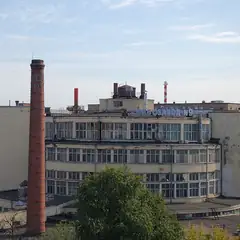
- Хлебозавод №9 · Креативный квартал · м. Дмитровская
- 6 минут пешкомФлакон · Дизайн-завод
Два креативных квартала рядом: еда, бары и маркеты, можно переходить из одного в другой.
Открыть план: Бары Хлебозавода и ФлаконаПозвать сюда: Бары Хлебозавода и Флакона
Фото: Bezik, CC BY-SA 4.0 · Wikimedia Commons
- Останкинская башня · Смотровая площадка · м. Бутырская
- 21 минута пешкомДом-музей Королёва · Музей
- 9 минут пешкомМузей космонавтики · Музей
Город с 337 метров со стеклянным полом (возьмите паспорт), потом минут двадцать прогулкой до дома, где жил конструктор Сергей Королёв, а оттуда меньше десяти минут до Музея космонавтики с настоящими спускаемыми аппаратами.
Открыть план: Башня и космосПозвать сюда: Башня и космос
Фото: Klodklodklod77, CC BY-SA 4.0 · Wikimedia Commons
- Парк Горького · Парк · м. Октябрьская
- 11 минут пешкомSUBSTANCE · Бильярд-бистро
Прогулка по набережной и пара партий в бильярд-бистро SUBSTANCE.
Открыть план: Бильярд в Парке ГорькогоПозвать сюда: Бильярд в Парке Горького
Фото: A.Savin, Free Art License · Wikimedia Commons
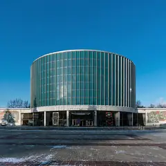
- Бородинская панорама · Музей · м. Парк Победы
- 2 минуты пешкомAtlantica Seafood · Рыбный ресторан
Сначала круговое полотно Рубо о Бородинском сражении, а потом устрицы и рыба в Atlantica в двух минутах пешком. Учтите: по пятницам панорама закрыта.
Открыть план: Бородино и морепродуктыПозвать сюда: Бородино и морепродукты
Фото: Alex 'Florstein' Fedorov, CC BY-SA 4.0 · Wikimedia Commons
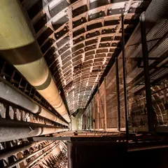
- Бункер-42 · Музей и ресторан под землёй · м. Таганская
- 9 минут пешкомRestaurant by Deep Fried Friends · Ресторан-бар
Экскурсия в секретный бункер холодной войны на глубине 65 метров, а потом бистро и коктейльный паб в Deep Fried Friends в девяти минутах пешком.
Открыть план: Бункер холодной войныПозвать сюда: Бункер холодной войны
Фото: Petr.efimenko, CC BY-SA 4.0 · Wikimedia Commons
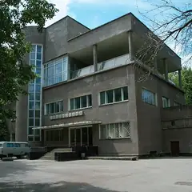
- Культурный центр ЗИЛ · Культурный центр · м. Автозаводская
- 8 минут пешкомАвлабар · Грузинский ресторан
Конструктивистский дворец культуры ЗИЛ и хинкали в «Авлабаре» у Автозаводской.
Открыть план: ДК ЗИЛ и ГрузияПозвать сюда: ДК ЗИЛ и Грузия
Фото: NVO, CC BY-SA 3.0 · Wikimedia Commons
- Парк «Зарядье» · Парк · м. Китай-город
- 9 минут пешкомBrasserie Lambic · Пивной ресторан
Прогулка по Парящему мосту, потом мидии и двести сортов пива в брассери за десять минут.
Открыть план: Зарядье и бельгийское пивоПозвать сюда: Зарядье и бельгийское пиво
Фото: Alina Vozna, CC BY-SA 4.0 · Wikimedia Commons
- Измайловский парк · Парк · м. Партизанская
- 12 минут пешкомИзмайловский кремль · Культурный комплекс
Большой круг по осеннему лесопарку с прудами, потом деревянный кремль: музеи, мастер-классы и блошиный «Вернисаж» рядом.
Открыть план: Измайлово на весь деньПозвать сюда: Измайлово на весь день
Фото: d.wine, CC BY-SA 2.5 · Wikimedia Commons
- Воробьёвы горы · Парк и смотровая · м. Воробьёвы горы
- 8 минут пешкомКанатная дорога · Канатная дорога
Пешком по жёлтым склонам Воробьёвых гор, потом кабинка над рекой в Лужники.
Открыть план: Канатка над осенним лесомПозвать сюда: Канатка над осенним лесом
Фото: Niklitov, CC BY-SA 4.0 · Wikimedia Commons
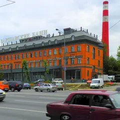
- Lonato · Картинг · м. Нагатинская
- 6 минут пешкомВаршавские бани · Баня
- 20 минут пешкомШале · Ресторан
Заезды на картах Lonato у «Нагатинской», потом в соседние Варшавские бани 1938 года с бассейном и джакузи, а ужин — в альпийском «Шале» минутах в двадцати пешком.
Открыть план: Картинг, баня и шалеПозвать сюда: Картинг, баня и шале
Фото: salech hcelas, CC BY 3.0 · Wikimedia Commons
- ROKU · Компьютерный клуб · м. Новослободская
- 3 минуты пешкомTaco Project · Мексиканское кафе
Пара часов в премиальном кибер-лаундже у Новослободской с топовым железом и VIP-комнатами, а через три минуты тако с открытой кухни в Taco Project.
Открыть план: Катка в ROKU и такоПозвать сюда: Катка в ROKU и тако
Фото: Stolbovsky, CC BY-SA 3.0 · Wikimedia Commons
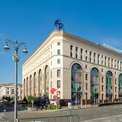
- WINSTRIKE Arena · Компьютерный клуб · киберарена · м. Лубянка
- 1 минута пешкомСмотровая ЦДМ · Смотровая площадка
Пара часов на киберарене, потом лифт на бесплатную смотровую на крыше того же здания — Кремль как на ладони.
Открыть план: Катка и крыша Детского мираПозвать сюда: Катка и крыша Детского мира
Фото здания: Никонико962, CC BY-SA 4.0 · Wikimedia Commons
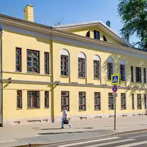
- Клаустрофобия · Квест · м. Чистые пруды
- 9 минут пешкомKeep · Гастробар
Час в квест-комнате у Чистых прудов (комнату, с актёрами или без, выбираете на сайте), а потом готический гастробар со свечами на Мясницкой — в десяти минутах пешком. По пятницам и субботам там танцы и DJ.
Открыть план: Квест и готический барПозвать сюда: Квест и готический бар
Фото здания: Никонико962, CC BY-SA 4.0 · Wikimedia Commons
- Rizz Cyber & Lounge · Компьютерный клуб · м. Смоленская
- 2 минуты пешкомАрбат · Пешеходная улица
Катка в переулках у Смоленской, а потом проветрить голову на Старом Арбате — две минуты пешком.
Открыть план: Кибер-лаундж и ночной АрбатПозвать сюда: Кибер-лаундж и ночной Арбат
Фото: Alex 'Florstein' Fedorov, CC BY-SA 4.0 · Wikimedia Commons
- WINSTRIKE Arena · Компьютерный клуб · киберарена · м. Лубянка
- 1 минута пешкомAnvio VR · VR-арена
WINSTRIKE Arena и Anvio VR — в одном здании на Лубянке: сначала катка за ПК, потом рубилово в шлемах.
Открыть план: Киберарена и VR в одном домеПозвать сюда: Киберарена и VR в одном доме
Фото здания: Никонико962, CC BY-SA 4.0 · Wikimedia Commons
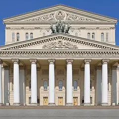
- Большой театр · Театр · м. Охотный ряд
- 5 минут пешкомБар «Шаляпин» · Коктейльный бар
После спектакля в Большом — коктейли в историческом баре «Шаляпин».
Открыть план: Коктейли в «Метрополе»Позвать сюда: Коктейли в «Метрополе»
Фото: Юрий Д.К., CC BY 4.0 · Wikimedia Commons
- Коломенское · Музей-заповедник · м. Коломенская
- 19 минут пешкомF5 Коломенская · Компьютерный клуб
Холмы над рекой, белая церковь Вознесения и деревянный дворец царя Алексея Михайловича, а ближе к вечеру катки в F5 у «Коломенской», 19 минут пешком.
Открыть план: Коломенское и F5Позвать сюда: Коломенское и F5
Фото: Ludvig14, CC BY-SA 4.0 · Wikimedia Commons
- Музей космонавтики · Музей · м. ВДНХ
- 12 минут пешкомColizeum ВДНХ · Компьютерный клуб
Музей космонавтики под монументом «Покорителям космоса», а потом круглосуточный Colizeum в двенадцати минутах пешком: можно засидеться до утра.
Открыть план: Космос днём, катка ночьюПозвать сюда: Космос днём, катка ночью
Фото: Музей космонавтики, CC0 · Wikimedia Commons
- Музей космонавтики · Музей · м. ВДНХ
- 16 минут пешкомВДНХ · Парк
Настоящие спускаемые аппараты, скафандры и макет станции «Мир» в музее под монументом, а потом прогулка по ВДНХ к фонтану «Дружба народов».
Открыть план: Космос и ВДНХПозвать сюда: Космос и ВДНХ
Фото: Музей космонавтики, CC0 · Wikimedia Commons
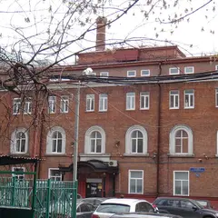
- Станция 2025 · Лазертаг · м. Волгоградский проспект
- 8 минут пешкомКалитниковские бани · Баня
Сценарные миссии лазертага в декорациях космической станции, а минут через восемь — Калитниковские бани: травяной пар каждые 40 минут и VIP-кабинеты до 8 гостей.
Открыть план: Лазертаг на станции и баняПозвать сюда: Лазертаг на станции и баня
Фото: karel291, CC BY 3.0 · Wikimedia Commons
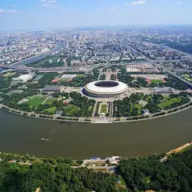
- Лужники · Стадион · м. Воробьёвы горы
- 27 минут пешкомУсачёвский рынок · Рынок и фудкорт
Дневной матч в Лужниках (расписание — на сайте стадиона), а потом около получаса пешком до Усачёвского рынка: на фудкорте каждый выберет своё, открыт до 22:00.
Открыть план: Матч в Лужниках и рынокПозвать сюда: Матч в Лужниках и рынок
Фото: mos.ru, CC BY 4.0 · Wikimedia Commons
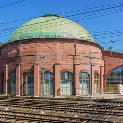
- Музей транспорта Москвы · Музей · м. Комсомольская
- 3 минуты пешкомТри вокзала. Депо · Фудмолл
Новый музей в гараже Мельникова, потом каждый выбирает своё в шестидесяти корнерах Депо.
Открыть план: Музей транспорта и фудмоллПозвать сюда: Музей транспорта и фудмолл
Фото: A.Savin, Free Art License · Wikimedia Commons


Места для большой компании 24 из 149
Новорязанская ул., 23, стр. 1
60 корнеров в бывшем троллейбусном депо и большая крыша-терраса. До 23, в пт–сб до 00.
Подробнее и маршрут: Три вокзала. ДепоПозвать сюда: Три вокзала. Депо
Фото: A.Savin, Free Art License · Wikimedia Commons
ул. Мясницкая, 42, стр. 2
Готический гастробар во дворах Мясницкой: свечи, белые полотна и росписи с ангелами. Днём завтраки и сэндвичи, по пятницам и субботам — танцы и DJ.
Подробнее и маршрут: KeepПозвать сюда: Keep
Фото здания: Никонико962, CC BY-SA 4.0 · Wikimedia Commons
Большая Косинская ул., 45
Яхт-клуб на Белом озере: прогулочная зона, разноцветные домики и атмосфера курортного городка на востоке Москвы.
Подробнее и маршрут: Белое озеро в КосинеПозвать сюда: Белое озеро в Косине
Фото: Sergey Ashmarin, CC BY-SA 3.0 · Wikimedia Commons
Рочдельская ул., 15, стр. 30
Раки, морепродукты и караоке до шести утра на Трёхгорке.
Подробнее и маршрут: РаковарняПозвать сюда: Раковарня
Фото: Ludvig14, CC BY-SA 4.0 · Wikimedia Commons
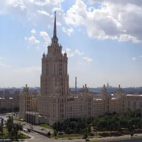
причал у гостиницы «Украина», Кутузовский пр., 2/1
Круиз по Москве-реке круглый год, с ужином на борту: около 2,5 часа, билет от 2 700 ₽.
Подробнее и маршрут: Флотилия RadissonПозвать сюда: Флотилия Radisson
Фото: Bilbi (Pavel Leman), CC BY-SA 3.0 · Wikimedia Commons
Рождественский бул., 1
65+ корнеров с кухнями мира, по четвергам–субботам вечеринки. До 23:00, в чт–сб до полуночи.
Подробнее и маршрут: Центральный рынокПозвать сюда: Центральный рынок
Фото: T3ru, CC BY-SA 4.0 · Wikimedia Commons
Варшавское ш., 34
Большие бани с 1938 года у «Нагатинской»: высший разряд с бассейном и джакузи, женский разряд и «Бани мира» — залы «Шале», «Тунис» и др. на 6–13 гостей.
Подробнее и маршрут: Варшавские баниПозвать сюда: Варшавские бани
Фото: salech hcelas, CC BY 3.0 · Wikimedia Commons
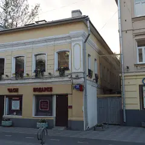
Пятницкая ул., 30, стр. 1
Советская рюмочная в духе 80-х: с вс по чт «народное караоке» с ведущим, в пт–сб дискотека с хоровым пением, по вт и ср — стендап. Настойки, закуски, до 6 утра.
Подробнее и маршрут: ЕвгеничПозвать сюда: Евгенич
Фото здания: Interstep75, CC BY-SA 4.0 · Wikimedia Commons
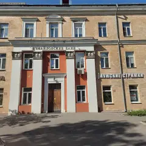
6-я Парковая ул., 21
Сталинское здание 1953 года с петровскими мозаиками и резьбой: сеанс 2 часа от 1 500 ₽, для компании — кабинеты на 5, 6 и 12 человек. Есть женские дни.
Подробнее и маршрут: Измайловские баниПозвать сюда: Измайловские бани
Фото: Kotofey2016 / Википедия, CC BY-SA 4.0 · Wikimedia Commons
Большая Калитниковская ул., 42
Бани у ТТК: травяной пар каждые 40 минут, хаммам и бассейн, женский разряд и VIP-кабинеты до 8 гостей для посиделок между заходами.
Подробнее и маршрут: Калитниковские баниПозвать сюда: Калитниковские бани
Фото: karel291, CC BY 3.0 · Wikimedia Commons
ул. Усачёва, 10, стр. 1
Бани с почти вековой историей в Хамовниках после реконструкции: три мужских разряда, женское отделение и VIP-кабинеты для своих. Свежий пар каждый час.
Подробнее и маршрут: Усачёвские баниПозвать сюда: Усачёвские бани
Фото: Ludvig14, CC BY-SA 4.0 · Wikimedia Commons
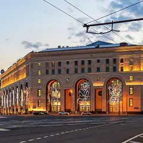
Театральный пр., 5/1 (ЦДМ, 5 этаж)
Командные VR-игры: перестрелки, зомби, квесты в виртуальной реальности.
Подробнее и маршрут: Anvio VRПозвать сюда: Anvio VR
Фото: A.Savin, CC BY-SA 3.0 · Wikimedia Commons
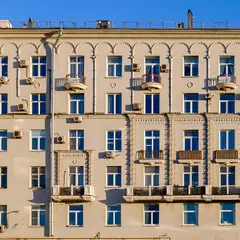
ул. Большая Полянка, 1/3
Караоке Тимура Ланского в одном здании с «Чайхоной №1» на Полянке: акустика Nexo, барабаны, бэк-вокал, в пятницу живая группа. Чт–сб с 20:00, в четверг без депозита.
Подробнее и маршрут: Karaoke ProПозвать сюда: Karaoke Pro
Фото здания: Никонико962, CC BY-SA 4.0 · Wikimedia Commons
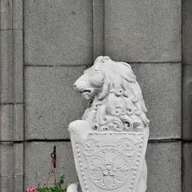
Мясницкая ул., 15
Новое
Ирландский паб на Мясницкой, где футбол на экранах — обычное дело почти каждый вечер, а расписание матчей вывешивают заранее. В пятницу и субботу открыт до 6 утра.
Подробнее и маршрут: Lion's Head PubПозвать сюда: Lion's Head Pub
Фото: Дмитрий Иванов, общественное достояние · Wikimedia Commons
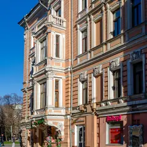
1-я Тверская-Ямская ул., 2, стр. 1
Гастробар у Маяковской: кухня под бокал вина для свиданий и встреч после работы.
Подробнее и маршрут: ВальдоПозвать сюда: Вальдо
Фото здания: Никонико962, CC BY-SA 4.0 · Wikimedia Commons
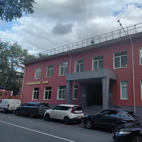
Воронцовский пер., 5/7, стр. 1
Бани с 1938 года у Таганки: два мужских и женский разряд от 3 500 ₽ за 4 часа, плюс восемь отдельных тематических бань для компании. Открыты до полуночи.
Подробнее и маршрут: Воронцовские баниПозвать сюда: Воронцовские бани
Фото: Александр Сигачёв, CC0 · Wikimedia Commons
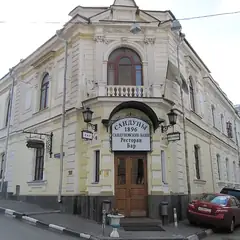
Неглинная ул., 14, стр. 4
Легендарные бани в центре: парная, бассейн и дворцовые интерьеры.
Подробнее и маршрут: Сандуновские баниПозвать сюда: Сандуновские бани
Фото: Vladimir OKC, общественное достояние · Wikimedia Commons
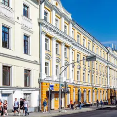
Лубянский пр., 15, стр. 2
Караоке с многолетней историей у Китай-города: зал со сценой, бэк-вокалисты и сильный звук, отдельный бар и VIP-зона. Депозит от 5000 ₽ с гостя, 18+, с 20:00 до 6 утра.
Подробнее и маршрут: Jimmy PoyПозвать сюда: Jimmy Poy
Фото здания: Никонико962, CC BY-SA 4.0 · Wikimedia Commons
Большая Садовая ул., 14, стр. 10
Караоке-бар на Садовом, в двух шагах от студии танцев.
Подробнее и маршрут: Karaoke LightsПозвать сюда: Karaoke Lights
Фото здания: Shakko, CC BY-SA 4.0 · Wikimedia Commons
Чистопрудный бул., 10, стр. 1
Одна из старейших сетей квестов в Москве. Комнату и время выбирайте на сайте — есть с актёрами и без.
Подробнее и маршрут: КлаустрофобияПозвать сюда: Клаустрофобия
Шарикоподшипниковская ул., 13, стр. 89
Самый большой крытый картинг Москвы: трасса 500 м, VR-арена и ресторан внутри.
ул. Крымский Вал, 9, стр. 5
Бильярд-бистро в Парке Горького: завтраки с утра и партии вечером.
просп. Будённого, 33
Бани с 1939 года, известные очень жарким паром: хаммам с мыльным массажем, соляная пещера, мужское и женское отделения, VIP-кабинеты для компании.
Подробнее и маршрут: Бани «Соколиная Гора»Позвать сюда: Бани «Соколиная Гора»
Украинский бул., 15
Гастропаб Александра Раппопорта у Киевского вокзала: пиво и ностальгическая еда.
Подробнее и маршрут: Гастропаб «Бибирево»Позвать сюда: Гастропаб «Бибирево»


Куда сходить компанией в ближайшие две недели 8 из 54
VK Stadium · м. Сокол · 4 000–16 500 ₽ · 16+
Танцевальный концерт «Заточки»: хиты, новые песни, общий хор и танцпол на весь VK Stadium. Хороший вариант для шумной компании.
Подробнее: ЗаточкаПозвать сюда: ЗаточкаБилеты : Заточка (страница с билетами, откроется в новой вкладке)
STILL, Большой зал · м. Чистые пруды · от 2 500 ₽ · 18+
Формат без ведущего: на сцену по очереди выходят пять хедлайнеров, и лайнап каждый раз другой. Сеансы в 16:00, 19:00 или 21:30 — смотри по дате.
Подробнее: 5 хедлайнеров за 2500₽Позвать сюда: 5 хедлайнеров за 2500₽Билеты : 5 хедлайнеров за 2500₽ (страница с билетами, откроется в новой вкладке)
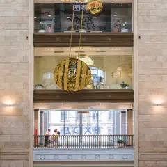
Центральный детский мир · м. Кузнецкий Мост · бесплатно
Бесплатный научный праздник в ЦДМ: опыты, робототехника, мастер-классы и концерты. Подойдёт, чтобы зайти компанией или с детьми.
Подробнее: Фестиваль изобретенийПозвать сюда: Фестиваль изобретенийБилеты : Фестиваль изобретений (страница с билетами, откроется в новой вкладке)
Фото: AlixSaz, CC BY-SA 4.0 · Wikimedia Commons
Стендап клуб на Трубной, Большой зал · м. Трубная · 950–1 500 ₽ · 18+
Фирменный вечер клуба: опытные комики с обкатанным материалом. Показы почти каждый день, по пятницам и субботам — в 19:00 и 21:00.
Подробнее: Биг стендапПозвать сюда: Биг стендапБилеты : Биг стендап (страница с билетами, откроется в новой вкладке)
МДМ (Московский дворец молодёжи), Большой зал · м. Фрунзенская · от 1 100 ₽ · 12+
Музыкальная комедия на хитах Челентано и итальянской эстрады — лёгкая, как старые кинокомедии. По выходным есть дневные показы.
Подробнее: Всё будет Челентано!Позвать сюда: Всё будет Челентано!Билеты : Всё будет Челентано! (страница с билетами, откроется в новой вкладке)
ГМИИ им. А. С. Пушкина, Галерея искусства стран Европы и Америки · м. Кропоткинская
Кубинские киноафиши и плакаты 1950–70-х — больше 140 листов дерзкой графики. Зайдёт и тем, кто к музеям обычно равнодушен. По понедельникам закрыто.
Подробнее: Кубинский плакат. 1950–1970-е. Кино и революцияПозвать сюда: Кубинский плакат. 1950–1970-е. Кино и революцияБилеты : Кубинский плакат. 1950–1970-е. Кино и революция (страница с билетами, откроется в новой вкладке)
Фото: Ghirlandajo, CC BY-SA 3.0 · Wikimedia Commons
Иммерсивный театр «Морфеус» · м. Павелецкая · 3 900–4 900 ₽ · 16+
Иммерсивная комедия с закрытыми глазами: семь зрителей попадают в Москву 1903 года с театральными интригами и кафе. Полтора часа, несколько сеансов в день.
Подробнее: Поезд, Чехов, два орлаПозвать сюда: Поезд, Чехов, два орлаБилеты : Поезд, Чехов, два орла (страница с билетами, откроется в новой вкладке)
StandUp Cafe, Большой зал · м. Чистые пруды · от 2 500 ₽ · 18+
Хетаг Хугаев строит шутки на каламбурах и внезапных поворотах в историях. Сольник около 90 минут; старт в 19:00 или 21:30 — зависит от дня.
Подробнее: Хетаг Хугаев. Сольный концертПозвать сюда: Хетаг Хугаев. Сольный концертБилеты : Хетаг Хугаев. Сольный концерт (страница с билетами, откроется в новой вкладке)

Как позвать
- Выбери план, место или событие — в карточке адрес, цены и маршрут в Яндекс Картах.
- Нажми «Позвать сюда» — соберётся приглашение-игра для свидания или голосование для компании.
- Отправь ссылку в любой мессенджер: тебе ответят, а компания отметит, куда и когда может. Бесплатно и без регистрации.